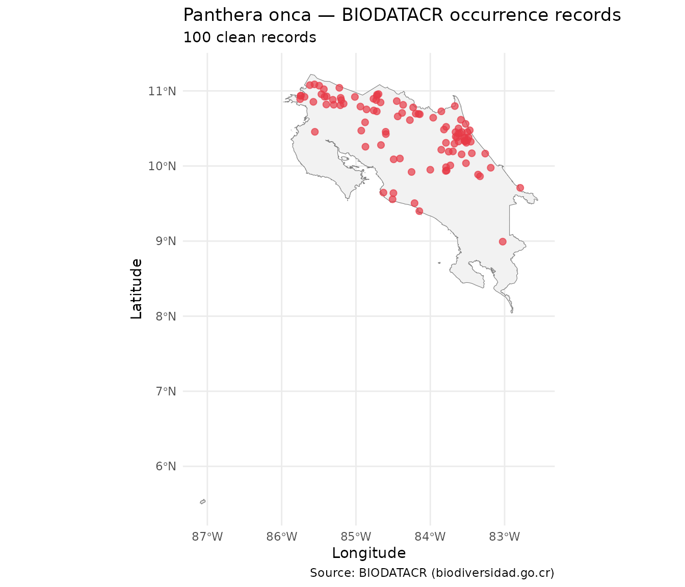

Overview
rbiodatacr is an R client for querying BIODATACR, the national
biodiversity information platform of Costa Rica managed by the Technical
Office of CONAGEBIO. The platform is built on the Atlas of Living Australia (ALA) API
infrastructure.
1. Taxonomic search
Before downloading occurrence records, use
bdcr_species_search() to verify that the species name is
recognized by BIODATACR and to retrieve its taxonomic identifier
(GUID).
bdcr_species_search("Panthera onca")
#> # A tibble: 2 × 7
#> name guid commonName scientificName rank taxonomicStatus nameComplete
#> <chr> <chr> <chr> <chr> <chr> <chr> <chr>
#> 1 Panthera o… 5219… "" Panthera onca… spec… accepted Panthera on…
#> 2 Panthera o… 5219… "" Panthera onca… subs… accepted Panthera on…The function may return more than one row when both the species and
subspecies are registered. The guid column contains the
unique identifier for each taxonomic concept — useful for precise
queries.
2. Counting records
Use bdcr_count() to check how many occurrence records
are available before downloading.
bdcr_count("Panthera onca")
#> [1] 313For multiple species at once use bdcr_count_batch(),
which returns a tidy tibble with one row per species.
species <- c(
"Tapirus bairdii",
"Panthera onca",
"Ara ambiguus",
"Bradypus variegatus"
)
conteos <- bdcr_count_batch(species)
conteos
#> # A tibble: 4 × 2
#> taxon n_records
#> <chr> <int>
#> 1 Tapirus bairdii 1
#> 2 Panthera onca 313
#> 3 Ara ambiguus 1216
#> 4 Bradypus variegatus 41513. Downloading occurrence records
bdcr_occurrences() downloads records for a single
species and returns a tibble with 15 fields relevant for biodiversity
analysis.
df_jaguar <- bdcr_occurrences("Panthera onca", rows = 100)
glimpse(df_jaguar)
#> Rows: 100
#> Columns: 15
#> $ scientificName <chr> "Panthera onca subsp. centralis (Mearns, 1901)", "Pan…
#> $ vernacularName <chr> "Central American Jaguar", "Jaguar Panthera onca", "J…
#> $ decimalLatitude <dbl> 10.91970, 9.95000, 10.47563, 10.68948, 10.48542, 10.5…
#> $ decimalLongitude <dbl> -85.01460, -84.00000, -83.46852, -84.14154, -83.81592…
#> $ year <int> 1993, NA, 2021, 2013, 2013, NA, 2013, NA, 2022, 2013,…
#> $ month <chr> "06", NA, "12", "06", "04", NA, "10", NA, "05", "09",…
#> $ basisOfRecord <chr> "PreservedSpecimen", "PreservedSpecimen", "HumanObser…
#> $ dataResourceName <chr> "Modelado de la distribución geográfica de mamíferos …
#> $ country <chr> "Costa Rica", "Costa Rica", "Costa Rica", "Costa Rica…
#> $ family <chr> "Felidae", "Felidae", "Felidae", "Felidae", "Felidae"…
#> $ species <chr> "Panthera onca", "Panthera onca", "Panthera onca", "P…
#> $ collector <chr> "NO DISPONIBLE", "Ch. d'Eternod", "UACFel (SINAC-Pant…
#> $ license <chr> "other", "other", "other", "other", "other", "other",…
#> $ geospatialKosher <lgl> TRUE, TRUE, TRUE, TRUE, TRUE, TRUE, TRUE, TRUE, TRUE,…
#> $ taxonomicKosher <lgl> TRUE, TRUE, TRUE, TRUE, TRUE, TRUE, TRUE, TRUE, TRUE,…For multiple species use bdcr_occurrences_batch(), which
returns a named list of tibbles — one per species.
spp_with_data <- filter(conteos, n_records >= 10)
lista_occ <- bdcr_occurrences_batch(
taxa = spp_with_data$taxon,
rows = 100
)
# Number of records per species
purrr::map_int(lista_occ, nrow)
#> Panthera onca Ara ambiguus Bradypus variegatus
#> 100 100 1004. Quality control
bdcr_quality_check() adds a quality_flag
column to the occurrences tibble. Possible flags are:
| Flag | Condition |
|---|---|
"ok" |
No issues detected |
"no_coords" |
Missing coordinates |
"geospatial_issue" |
geospatialKosher == FALSE |
"taxonomic_issue" |
taxonomicKosher == FALSE |
"old_record" |
Year before minimum threshold (default 1950) |
df_qc <- bdcr_quality_check(df_jaguar)
count(df_qc, quality_flag, sort = TRUE)
#> # A tibble: 1 × 2
#> quality_flag n
#> <chr> <int>
#> 1 ok 100Keep only clean records:
df_clean <- filter(df_qc, quality_flag == "ok",
!is.na(decimalLatitude),
!is.na(decimalLongitude))
nrow(df_clean)
#> [1] 1005. Mapping occurrence records
Convert the clean tibble to an sf object and plot the
records over Costa Rica.
# Convert to sf
df_sf <- st_as_sf(
df_clean,
coords = c("decimalLongitude", "decimalLatitude"),
crs = 4326
)
# Load Costa Rica national boundary included in rbiodatacr
# Source: GADM (gadm.org), level 0 = country boundary
data(cr_outline)
# Map
ggplot() +
geom_sf(data = cr_outline, fill = "gray95", color = "gray50") +
geom_sf(data = df_sf, color = "#E63946", size = 2, alpha = 0.7) +
labs(
title = "Panthera onca — BIODATACR occurrence records",
subtitle = paste0(nrow(df_sf), " clean records"),
caption = "Source: BIODATACR (biodiversidad.go.cr)",
x = "Longitude",
y = "Latitude"
) +
theme_minimal()
6. Complete workflow
# 1. Check availability
species <- c("Tapirus bairdii", "Panthera onca",
"Ara ambiguus", "Bradypus variegatus")
conteos <- bdcr_count_batch(species)
# 2. Download species with enough data
con_datos <- filter(conteos, n_records >= 10)
lista_occ <- bdcr_occurrences_batch(
taxa = con_datos$taxon,
rows = 200
)
# 3. Quality control
lista_limpia <- purrr::map(lista_occ, bdcr_quality_check)
# 4. Consolidate and filter
df_final <- bind_rows(lista_limpia, .id = "taxon") |>
filter(quality_flag == "ok",
!is.na(decimalLatitude),
!is.na(decimalLongitude))
# 5. Summary
df_final |>
count(taxon, sort = TRUE) |>
rename(clean_records = n)
#> # A tibble: 3 × 2
#> taxon clean_records
#> <chr> <int>
#> 1 Panthera onca 200
#> 2 Ara ambiguus 199
#> 3 Bradypus variegatus 199